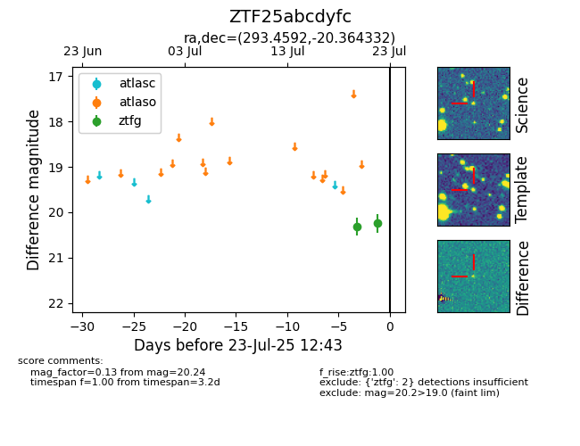

Target ZTF25abcdyfc at 2025-07-23 12:43, see:
FINK: fink-portal.org/ZTF25abcdyfc
Lasair: lasair-ztf.lsst.ac.uk/objects/ZTF25abcdyfc
ALeRCE: alerce.online/object/ZTF25abcdyfc
alt names
ZTF25abcdyfc (ztf,fink)
coordinates:
equatorial (ra, dec) = (293.4592,-20.36433)
galactic (l, b) = (18.8549,-18.18914)
photometry
last ztfg=20.24
2 ztfg detections
